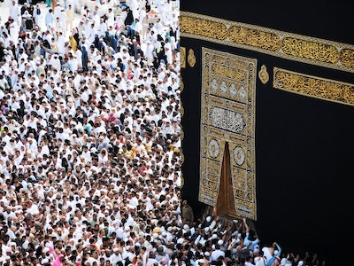

The best halal love story in Islam is one between Prophet Muhammad (Peace and blessing be upon him) and Khadijah (May Allah be pleased with her). Khadijah was the wife of our Prophet Mohamed and the mother of the faithful.
When the prophet “PBUH” came back from the cave after the first revelation by the Glorious Spirit; Gabriel “PBUH”, (when he asked him to read), he was quite scared and frightened. He was shivering out of fear and panic. He told her to cover him with mantles. She said and uttered words more precious than the whole world, than jewels and gold of the whole universe.
She was the first human being to believe in him as the last Prophet of Allah (PBUH). She even supported him with her money and wealth. She was the best wife, the best mother, and sister and at last the best sincere lover.
home about contact